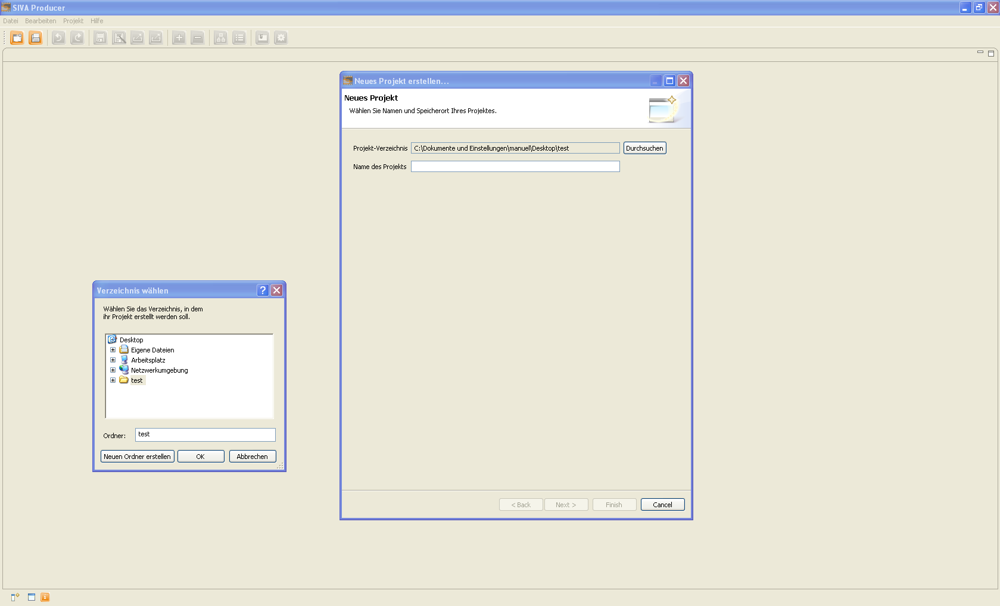

Zum Anlegen eines interaktiven Video-Projekts wird durch den Klick auf den Projekt-Anlegen-Button folgender Dialog zum Anlegen eines neuen Projektes geöffnet:

Nach der Auswahl eines Speicherortes durch einen Klick auf den Durchsuchen-Button
und Navigation zum gewünschten Verzeichnis im Verzeichnis-Explorer kann ein
Projektname festgelegt werden. Durch einen Klick auf "Weiter" gelangt man zum nächsten Dialog,
der Auswahl des Startmoduses.
In diesem Dialog kann ausgewählt werden, ob ein Video den gesamten Playerbereich einnehmen soll
oder nur in der Mitte mit den umgebenden Annotationsbereichen abgespielt werden soll. Ein Klick auf
"Weiter" ruft wieder einen neuen Dialog auf.
In der Auswahl des Designs kann das Aussehen des Players bestimmt werden, dabei stehen zwei
unterschiedliche Themen zur Verfügung. Mit "Weiter" wird der letzte Dialog aufgerufen.
Im Layouteditor können die Größen der einzelnen Anzeigebereiche für die Annotationen und das
Video angepasst werden. Dabei kann durch eine Größe von "0" ein Annotationsbereich komplett
ausgeblendet werden. Danach kann mit dem Erstellen des interaktiven Videos
begonnen werden.